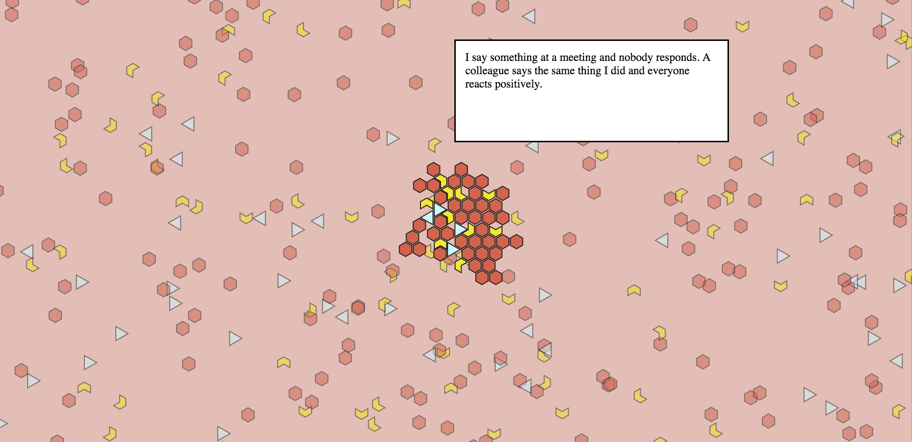

Racism? Ageism? Sexism? In today’s society, underneath the larger and more clearly defined injustices, we also face everyday -isms that make the world a less fair and equal place. Some of it has become so normalized or part of our culture that it becomes invisible. These are the invisible injustices that are hard to bring up but still leave us feeling disrespected and pushed aside without really knowing why. #metoo? So what? What’s next? What can we do about it?
The project came about first as a way to help myself figure out how to design for this problem. It was a tool I needed to understand why this was so hard to tackle. I experimented with workshops to attempt to diffuse the tension and get to the root of the problem. After running into countless roadblocks, the workshop finally gave life to the project and direction.
PENTA is an open source workshop that uses DIY data visualizations and a maker approach to talk about hard topics. PENTA works within communities of people that know each other already, such as work teams and organizations. It can be run during team building or conferences and ideally done more than once, before large projects or whenever a new member joins the team.
The kit comes with a starter pack of topics, blank cards for new examples, voting sheets, voting tokens and reflection sheets. PENTA Gender Edition comes with a starter pack of gender issues. In the future, starter packs for race or age or other isms could be integrated into a single workshop.
The workshop is broken into two parts. The first is to establish everyone’s baseline and visualize the group’s temperature on certain topics. The second part is a set time and space to build solutions for a specific topic.
To supplement the physical standalone workshops, PENTA also lives online where anyone can interact with the kit by using their phones and computers to input their individual data and see real time visualizations. Results from workshops or from online are collected through the site to keep the kit relevant and growing for future workshops.
The goal of running this workshop is not only to create a space for becoming aware of each others boundaries and coming to agreements on what constitutes a considerate space, it balances the conversation building solutions or ideas to directly address certain issues and not just stop at the problem. By crowdsourcing all the ideas and conversations that stem from these workshops, PENTA becomes a larger system of microjustice where information and ideas are shared online.